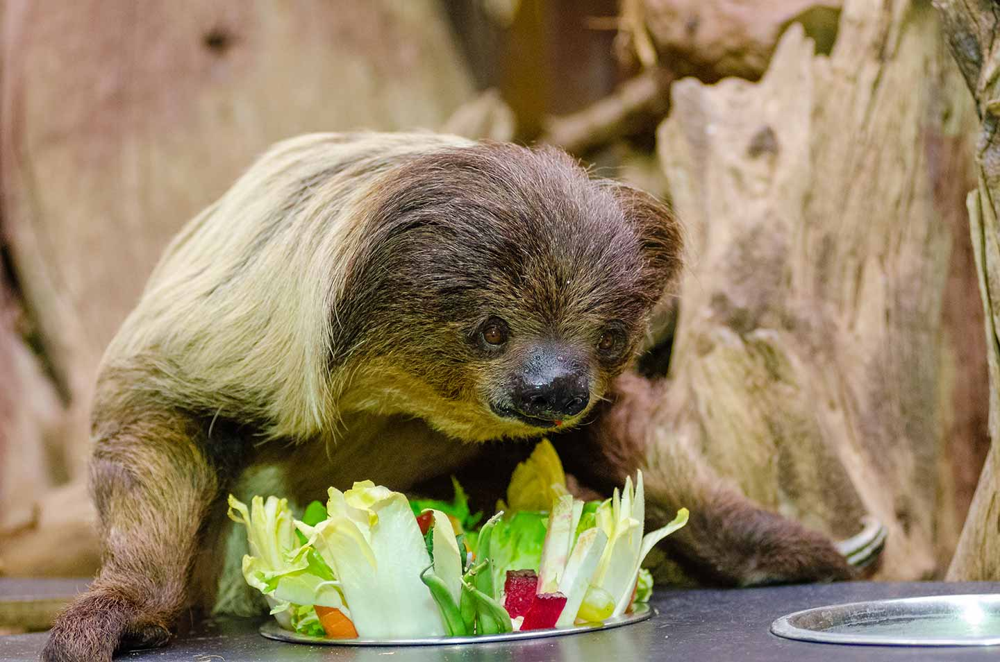

The Mighty Sloth
Sloths are mammals classified in the families Megalonychidae (two-toed sloths) and Bradypodidae (three-toed sloths), including six extant species. They are named after the capital sin of sloth because they seem slow and lazy at first glance; however, their usual idleness is due to metabolic adaptations for conserving energy.
Aside from their surprising speed during emergency flights from predators, other notable traits of sloths include their strong body and their ability to host symbiotic algae on their furs.